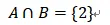
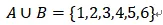
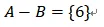

— DATA STRUCTURE / 05
第五章 C++ STL 库教程（附带题库）
vector / list / queue / stack / set / map 的常用接口与坑点，竞赛里用它直接替掉手写实现。
01 / SECTION
C++的区别
- C++ 由 Bjarne Stroustrup 于 1980 年前后着手创建，是在 C 语言基础上改进而来的面向对象语言。
- C++ 是 C 的超集，兼容 C，新增关键字与面向对象特性；本教程只从数据结构角度使用 C++ 的便利特性。
- 头文件写法：C 用
#include<stdio.h>，C++ 直接#include<cstdio>（C 系库前加 c 表示来自 C 语言）。 - 输入输出：C 的
scanf/printf需指定格式符；C++ 用流cin >> n; cout << n;，自动判类型但速度较慢（后文有加速方案）。 - STL = Standard Template Library，标准模板库，由惠普实验室的 Stepanov 等人开发，本质是“容器 + 算法”的集合。
- STL 的目的：组件标准化，已实现的数据结构与算法直接调用，无需重复开发，且是 C++ 标准的一部分、无需额外安装。
- C++ 标准中 STL 组织为 13 个头文件：algorithm、deque、functional、iterator、vector、list、map、memory、numeric、queue、set、stack、utility。
- 关键提醒：先懂原理再用 STL，否则就是乱用。
02 / SECTION
C++STL教程入门
- STL 六大组件，重点是前三项：
- 容器（Container）：已实现的数据结构，如 list、vector、stack、queue，以模板类提供。
- 迭代器（Iterator）：一种特殊指针，是容器与算法之间的“胶合剂”，可安全访问容器元素。
- 算法（Algorithm）：泛型算法模板，能直接作用于容器，也能作用于数组、自定义结构体。
- 次重点三项（带 * 号）：
- 仿函数（function object）：行为像函数，可理解为重载了
()的类/结构体。 - 迭代适配器（Iterator Adaptor）：修饰容器或仿函数的接口，支持逆向、安插、与流配合等模式。
- 空间配置器（allocator）：负责容器空间的申请与释放，类似 malloc/free、new/delete。
- 一句话：不学 STL 的 C++ 是不完整的 C++。
03 / SECTION
C++STL之Vector容器
- 本质：动态数组——连续存储、支持按下标随机访问，但大小可自动增长，空间由容器管理。
- 头文件
#include <vector>；定义格式vector<类型> 名字; - 五种初始化：
vector<int> v1;空向量vector<int> v2(10);开辟 10 个元素（相当于 int v[10]）vector<int> v3(10,5);10 个元素全为 5vector<int> v4(v3.begin(),v3.end());区间拷贝vector<int> v5(v4);复制构造- 迭代器遍历：
vector<int>::iterator it; for(it=v.begin(); it!=v.end(); it++) cout<<*it;；也可直接下标v[i]（新手更常用）。 - 常用接口：
push_back(val)尾部插入，pop_back()尾部删除insert(pos, val)指定位置插单值；insert(pos, n, val)插 n 个；insert(pos, first, last)插一段erase(pos)删单个；erase(first, last)删区间（左闭右开）clear()清空全部；size()元素个数capacity()已开辟容量（只增不减，与 size 可不等）max_size()该机器可支持的最大容量（极大值，随机器不同）- 理解要点：capacity 反映“容器已经要了多大空间”，size 反映“实际装了多个”，这正是动态数组扩容的核心机制。
04 / SECTION
C++STL之List容器
- 本质：STL 提供的链表容器，适合频繁在任意位置插入删除，代价是不支持随机访问。
- 头文件
#include <list>；初始化与 vector 一致：list<int> l1;、list<int> l2(10);、list<int> l3(5,20);、list<int> l4(l3.begin(),l3.end());、list<int> l5(l4); - 迭代器遍历写法与 vector 相同，只是把类型换成
list<int>::iterator。 - 常用接口：
empty()判空、size()取元素个数push_front(x)/pop_front()头部插入、删除push_back(x)/pop_back()尾部插入、删除insert(pos, val)、insert(pos, n, val)、insert(pos, first, last)erase(pos)、erase(first, last)- 排序：
sort()默认升序；sort(cmp)传自定义比较函数，如bool cmp(const int &a, const int &b){ return a>b; }得到降序。 - 注意：list 只能用自己的成员函数
sort()，不能用 algorithm 的全局sort（因为需要随机访问迭代器）。 - 逆序：
reverse()直接把整个链表反转，比自定义降序更省事。
05 / SECTION
C++STL之stack栈容器
- 本质：先进后出（LIFO）；STL 直接用模板类实现，不必再手写结构体链条。
- 头文件
#include <stack>；初始化：stack<int> s;、stack<int> v(s); - 特殊写法：
stack<int, vector<int> > s(v);，用 vector 作为底层容器——注意> >之间必须有空格，否则被当成右移运算符。 - 无迭代器：栈只能通过“访问栈顶 → 弹出”的方式逐个取完，属于访问受限容器。
- 常用接口：
size()元素个数top()取栈顶（可读也可改，如s.top() += 100）push(val)入栈pop()出栈，无返回值，要取值需先 top 再 popempty()判空- 遍历套路：
while(!s.empty()){ cout<<s.top(); s.pop(); }；注意这会清空原栈，想保留要先复制一份。 - 练习：用 STL 重做进制转换（1055、1192）与斐波那契（1131）。
06 / SECTION
C++STL之Queue容器
- 本质：先进先出（FIFO）；STL 队列是快速构建搜索算法、图论/数论状态存储的基础，务必掌握。
- 头文件
#include <queue>；初始化：queue<int> q;、queue<int> qoo(q);；也可queue<int, vector<int> > s(v); - 无迭代器：只能访问队头并不断出队来遍历。
- 常用接口：
size()元素个数push(val)入队（队尾插入）pop()出队（队头弹出，无返回值）front()访问队头（常用，可修改）back()访问队尾（较少用）empty()判空- 遍历套路：
while(!q.empty()){ cout<<q.front(); q.pop(); } - 练习：用 STL 重做队列基本操作（1895）。
07 / SECTION
C++STL之Priority_queue（优先队列）
- 本质：不遵守先进先出，而是给每个元素一个权值，按权值排序，权值最大（或最小）的永远在队头。
- 底层是非线性的堆结构（因此只允许访问堆顶），属于较高级的数据结构。
- 头文件仍用
#include <queue>。 - 模板参数：
priority_queue<T, Container, Compare> - T：元素类型
- Container：底层容器，必须是用数组实现的容器（vector、deque 可以，list 不行），默认 vector
- Compare：比较方式，类似 sort 的第三个参数，但必须写成结构体的运算符重载，不能直接写
bool cmp(int a,int b)
cpp
struct cmp {
bool operator()(int &a, int &b) const { return a > b; } // 小根堆
};
priority_queue<int, vector<int>, cmp> q;
priority_queue<int> pq; // 默认大根堆- 常用接口：
size()、push()、pop()、top()（只允许访问队头，命名沿用栈的 top）、empty() - 示例流程：依次 push 10、20、30、40、50、15、4，再逐个取 top 输出，结果为从小到大 4、10、15、20、30、40、50（即小根堆）。
- 应用价值：是 Dijkstra 等图论最短路算法堆优化的关键；练手题 1169。
08 / SECTION
C++STL之Set容器
- 本质：关联式容器，底层为红黑树，插入即自动排序，且元素唯一（不重复）。
- 因此 set 天然可做数学意义上的集合，支持交、并、差等运算。
- 头文件
#include <set>；初始化模板三个参数：值类型、比较器（默认less<T>，升序）、空间配置器；实际只写set<int> s;即可。 - 迭代器：C98 写法
for(set<int>::iterator it=s.begin(); it!=s.end(); ++it) cout<<*it; - C11 起可用 auto：
for(auto it=s.cbegin(); it!=s.cend(); ++it)，省去类型声明（需编译器开启 C11）。 - 常用接口：
size()元素个数insert(val)插入（原型返回pair<iterator,bool>，bool 表示是否插入成功，可用于判重）erase(pos)/erase(first,last)删除单个/区间clear()清空元素（已占用的内存空间不归还）find(val)返回迭代器，取值要解引用*s.find(4)；s.erase(s.find(4))可按值删除- 复杂度：插入、删除、查找均 O(log n)，比手写链表按值查找 O(n) 高效得多。
09 / SECTION
set theory（集合论）
- 集合论是数学基本分支，研究“集合、元素、成员关系”，高中已接触交、并、差运算。
- 示例集合：A = {2,4,6}，B = {1,2,3,4,5}。
- algorithm 头文件：STL 的标准算法集合，如
sort(a, a+6)一行即可对数组排序。 - 集合三大运算函数（都在
<algorithm>中）： set_union(a.begin(),a.end(),b.begin(),b.end(),back_inserter(c))并集set_intersection(...)交集set_difference(...)差集（A 减去 B 中 A 也有的元素）- 调用形式统一：
第一集合起止 + 第二集合起止 + 输出插入器，结果常放进 vector。 - 这些函数要求两个区间已按相同规则有序（set 天然有序，正好满足）。
- 掌握这三个函数即可组合出更多集合论功能。



10 / SECTION
C++STL之Map容器
- 本质：关联容器，存储键—值对，可理解为“关联数组”，键唯一、不允许重复，底层同样自动排序。
- 头文件
#include <map>；模板四参数：Key、T（值）、比较器（默认 less<Key>）、配置器；常用只写map<char,int> s; - 迭代器：不能用
*it直接输出，因为 map 元素是复合类型，要用it->first取键、it->second取值。 - 常用接口：
size()元素个数insert(pair<char,int>('d',4))插入；更简便的写法是下标赋值s['d'] = 4;（键不存在则新建）erase(pos)、erase(first,last)、clear()find('d')返回迭代器，取值用s.find('d')->second；s.erase(s.find('d'))按值删除- 与 set 的关系：map 是“带值”的 set，set 是“只有键”的 map。
- 典型用途：计数、映射、去重、字典查找，是算法题中出现频率最高的 STL 容器之一。
11 / SECTION
C++STL之Pair类模板
- 本质：把两个数据（类型可不同）合成一组，像一个小结构体，因此可直接访问成员。
- 两个典型用途：map 的键值成对使用；函数需要返回两个值时。
- 头文件
#include <utility>（实际多数编译器不写也能用，pair 已在 std 中）。 - 初始化与访问：
pair<int,int> p;、pair<int,int> p(10,20);，用p.first/p.second访问。 - make_pair：
p = make_pair(10,20);免去分别赋值，且会自动做隐式类型转换（如传 float 会转成 int，灵活但需留意精度问题）。 - 排序特性：pair 默认先按 first 再按 second 比较，常用于“坐标 + 权值”这类二元数据。
- 练习：1096 扫雷题，可用 pair 存 (x, y) 二维坐标。
12 / SECTION
C++STL之multiset与multimap容器
- multiset：拥有 set 的全部功能，但允许重复元素，插入总是成功（只要数据合法）。
find(x)只返回第一个匹配元素的迭代器（如 {10,20,20,20} 查 20 返回第一个 20）；lower_bound()等同理。- 迭代器是“匿名”的：只提供顺序访问，不告诉你元素是第几个；要算位置需自己从头计数。
- 示例：依次插入 10、20、10、20、30、50，自动排成 {10,10,20,20,30,50}。
- multimap：拥有 map 的全部功能，但键可重复，即一个 key 可对应多个 value（如一个学生有多门成绩）。
- 三种遍历同一 key 全部值的方法：
- 方法一：
find(key)找到首个，再循环count(key)次，迭代器m++逐个输出。 - 方法二：
lower_bound(key)到upper_bound(key)区间遍历。 - 方法三：
equal_range(key)得到一对迭代器（first、second）再遍历。 - 三种思想本质相同，按习惯取舍即可。
13 / SECTION
C/C++如何设计函数多返回值？
- 全局变量法：函数内直接给全局变量赋值，看似能“返回”多个值，实为自欺欺人。
- 缺陷：多次调用或递归时数据紊乱；工程中滥用会引发意外后果，不推荐。
- pair 法：适合恰好两个返回值的场景，最理想也最简洁。
pair<string,int> getClass(int id){ return make_pair("DOTCPP!", id); }
- 指针返回法（数组返回法）：返回指针，指向一段连续内存，适合多个同类型返回值。
- 注意用
new申请、delete[]释放，否则内存泄漏。 - 结构体返回法：超过两个值、且类型不同时最推荐的写法，把各种类型打包成一个 struct 返回。
- 这与此前章节定义结点结构体的思路完全相通。
- C/C++ 本身不支持逗号式多返回值，是历史设计遗留；Python 可直接
return a,b,c并用x,y,z=getWay(97)接收。
14 / SECTION
C/C++如何加速输入输出效率（上）
- 痛点：大数据量时 cin/cout 常导致明明算法正确却超时，换成 scanf/printf 就过。
- 原因：cin 为了与 scanf 混用不出错，维护了同步缓冲区，牺牲了一部分效率。
- 加速三件套：
cpp
ios::sync_with_stdio(false); // 关闭与 stdio 的同步（默认开启）
cin.tie(0); // 解除 cin 与 cout 的绑定
cout.tie(0); // 进一步松绑 C++ 运行库层面的传输sync_with_stdio(false)相当于“是否兼容 stdio”的开关；tie 解除的是运行库层面的绑定，操作系统层面的 stdin/stdout 绑定无法解除。- 可用宏简化：
#define jiasu ios::sync_with_stdio(false),cin.tie(0),cout.tie(0); - 注意：解除绑定后不要再混用 scanf/printf 与 cin/cout，否则可能乱码。
- 实测数据（Windows，1e5 数据量）：解除绑定的 cout 约 29~30 秒，未解除约 47~51 秒，C++ 文件里的 printf 约 76~85 秒，C 文件 printf 约 29~30 秒。
- 结论：解除绑定后 cout 已经是最快的输出方式之一，输入仍需配合“快读”（下一节）。
15 / SECTION
C/C++如何加速输入输出效率（下）
- 快读思想：用
getchar()逐字符读入，按位拼数。 - 核心流程：判断是否为数字 → 按位读取 → ASCII 转数字 → 继续读 → 每次乘 10 再累加 → 结束返回。
- 负数处理：设 flag 标记，读到 '-' 时置 flag=0，最后返回负数（用
~(X-1)取负）。 - 基础快读模板：
cpp
inline int read(){
int X=0; bool flag=1; char ch=getchar();
while(ch<'0'||ch>'9'){ if(ch=='-') flag=0; ch=getchar(); }
while(ch>='0'&&ch<='9'){ X=(X<<1)+(X<<3)+ch-'0'; ch=getchar(); }
if(flag) return X;
return ~(X-1);
}- 使用：
int tmp = read();；加inline可进一步提升效率。 - 快速输出：思路相反，按位拆解输出，用递归先输出高位：
cpp
inline void write(int X){
if(X<0){ X=~(X-1); putchar('-'); }
if(X>9) write(X/10);
putchar(X%10+'0');
}- 高级模板：用命名空间 IO + 模板 +
fread缓冲区，可read<long long>()自动指定返回类型，效率最高但代码长、不易上手。 - 取舍建议：日常刷题用
ios::sync_with_stdio(false)三件套足够；卡时间极限时再上快读/快写。